IPA BCD 在 AJ04 上
究竟怎样划分、怎样规划
地图 A11123AJ04_231127_094529 的完整过程。原始结果来自 2026-10-30；2026-11-02 增加中间追踪与独立复核。每一块小区域都保留编号。
正在加载精确路线数据与地图……
这里的“IPA BCD”，包含哪两部分
本报告解释的是当前四组消融实验里的 ipa_bcd：IPA 原生 BCD 分解 + 原生单 cell 扫线 + 项目自己的跨区调度和安全连接。没有 Local Energy 调用，也没有 Local 补扫；不能把这条路线当作 IPA ROS action server 原封不动的输出。
| 实际运行部分 | 职责与本轮设置 |
|---|---|
map_io.load_map / Python | 阈值、最大连通区、EDT 净空、公共起点。 |
BoustrophedonExplorer / C++ | 全局旋转、临界切割、cell 标签与轮廓、每个 cell 的扫线和区内连接。 |
hybrid/native/main.cpp | 直接调用分解与单 cell 扫线；每个 cell 的原生初始 robot_pos 取该 cell 的中心。 |
hybrid/planner.py / Python | 裁剪、访问顺序、路径正反向、从公共起点连接所有目标。纯 BCD 模式不使用 Hybrid 区域分类来切换内核。 |
| 本轮适配差异 | 关闭原生额外半格腐蚀；外层已应用 1 m 净空。分解传入 min_cell_area = 0、min_cell_width = 0；不是上游默认参数。 |
上游固定提交 986c18384ed884dadd3bc857cd0c47c13b7d4716。原生 ROS 的标准 BCD 是算法 2，算法 8 是变体。本次未启动这两个 ROS 服务端文件，也未调用上游整房间的 TSP / LEFT_TO_RIGHT 调度入口。
先决定“什么算自由”，再决定“规划哪一片”
输入使用同名 PNG，1208 × 1710 像素。概率定义为 p = (255 − 灰度) / 255，仅 p < 0.25 算已知自由，即整数灰度 ≥ 192。其余像素全部作为不可通行输入；未知区没有补成自由区。
全图有 507,209 个自由像素，分成 114 个四连通分量。公共输入选择最大的 470,743 格作为目标连通区；另外 36,466 格没有进入这次规划。后续覆盖率的分母仍保留全部 507,209 格。
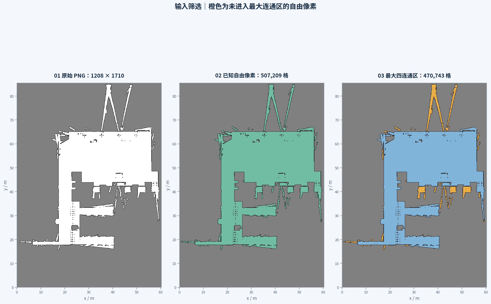
分辨率沿用同名 PGM 推得的 0.05 m/像素，实际代码以 float32 转为 0.05000000074505806 m；局部原点人为设为 [0,0,0]，不代表原始世界坐标。数组读取时顶行在上，进入规划后翻转为下左原点，像素中心换算为 x=(col+0.5)r，y=(H−row−0.5)r。
1 m 净空会断开通道；最后只保留起点能到达的 F
- 对最大连通区补一圈非自由边界，再做精确欧氏距离变换 EDT。
- 距离必须严格大于
ceil(1.0 / r) = 20像素，得到 295,111 格 navigable。这里的 1 m 是公共栅格净空规则，不是作业宽度。 - 以 EDT 最大值像素中心作为公共起点 (34.375001, 52.475001) m。
- 再次四连通标记，只取包含起点的分量 F：278,927 格。另有 16,184 格虽满足净空，仍与起点断开。
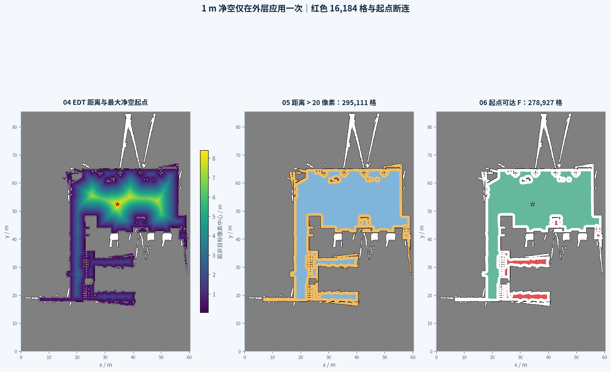
先把主要墙面方向转正，才开始切区
RoomRotator 先用 Canny(50,150,3) 提取 F 的边缘，再做 HoughLinesP。起始最短线长为 1 m；本图找到 92 条线段，足够使用第一轮参数。线段方向折算到 [0,π]，按长度加权进入 36 个方向桶，取权重最大桶内的加权平均方向。
AJ04 的全局旋转参数为 +90.5080880999°（OpenCV 约定），不是恰好 90°。如果旋转前后都按 y 向上显示，这个矩阵表现为顺时针 90.508°。旋转中心取 F 非零像素包围框中心，扩大画布得到 1723 × 1225。使用 warpAffine / INTER_AREA，再以 >127 二值化；没有形态学闭运算来抹掉细障碍。
旧图为什么不像只转了 90°：旧图左边是 y 向上的原地图，右边是行号向下的原生图，且左边还画了 F 以外的地图。两边直接对比时，混入了一次显示上的上下翻转。下面已改成左、中两张主图都只画同一个 F，纵轴都向上，像素尺度相同，可用 A、B、C 三个对应点和输入方向箭头核对。右边单列原生行号视图，避免把显示翻转误当成算法又转了一次。

展开精确仿射矩阵与坐标转换
先在下左原点像素坐标上用 R 变换；原生分区/扫线结果以 R⁻¹ 变回，再加半格中心偏移并乘 r。报告中的地图图层均回到同一原图坐标。逐 cell 还会再旋转一次，它与这里的全局旋转是两步。
逐行数自由片段；发生分裂或合并时才画边界
从旋转图第一行出现白像素的位置开始，沿 y′ 增大逐行扫描。实现通过“自由→黑色”的过渡计数，并记录障碍起止 x。比较相邻行的片段数：
| 事件 | 触发与检查 | 在哪里画边界 |
|---|---|---|
| IN / 分裂 | 片段数增加；对当前行黑像素检查上一行 x−1、x、x+1 是否全为自由。 | 在当前行向左右延伸，只标记当前/上一行均为自由的像素，遇黑障碍停止。 |
| OUT / 合并 | 片段数减少；回看上一行黑像素，检查当前行的三像素邻域。 | 在上一行向左右延伸；同时检查再上一行，避免把边界铺进障碍。 |
| SHIFT / 横向错位 | 片段数量相同，但相邻行片段位置错开时，也可能触发检查。 | 采用 IN 分支。本图没有触发 SHIFT，不能画一个虚构实例。 |
本图记录了 31 次 IN + 35 次 OUT = 66 次候选事件。其中 30 次真的新增边界像素，其余只进行了条件检查；最终形成 79 段连续边界像素。这些边界在算法内部临时阻断 floodFill，不是机器人移动障碍墙。
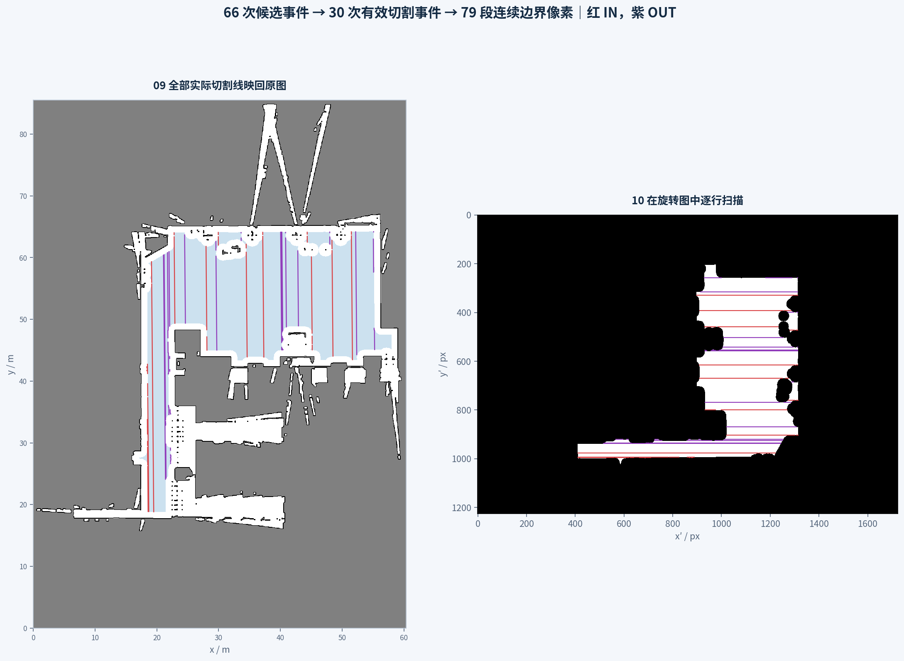
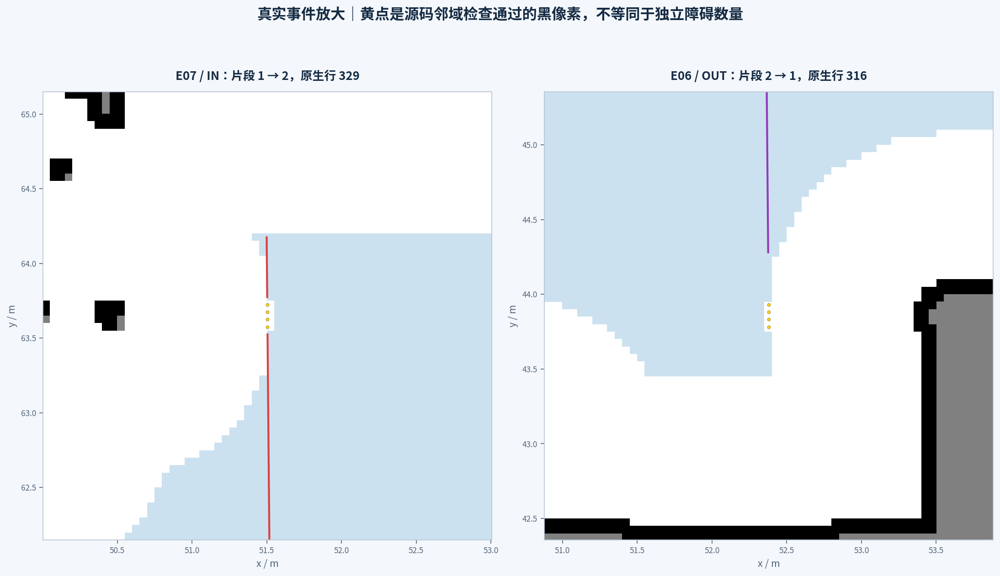
66 次事件逐步回放
当前新增切线红色，之前切线紫色，扫描行黄色虚线。可以滚轮放大、拖动。选中没有切线的事件时仍显示扫描位置。
展开全部 66 次事件明细
| 事件 | 类型 | 原生行 y′ | 片段变化 | 检查通过的黑像素 | 新增边界段 |
|---|
80 块是怎么数出来的；为什么有这么多小块
临时边界标记后，对剩余白像素用 四连通 floodFill 逐块标记：得到 80 个标签。再建立边界两侧 cell 的邻接关系；上游支持把太小的 cell 并入最大邻区，但本轮传入面积/宽度阈值都是 0，没有合并任何 cell。只把临时边界像素分给相邻的大区域，再提取每个标签的外轮廓。
GeneralizedPolygon 用填充轮廓后的非零像素数定义面积，不是直接用连续多边形面积公式。随后用距离变换和 MeanShift 求 cell 内部中心。标签面积与填充轮廓面积可能不同，CSV 分别列出。输出索引从 0 开始，所以 C00 对应原生标签 1，C79 对应标签 80；编号不是访问顺序。
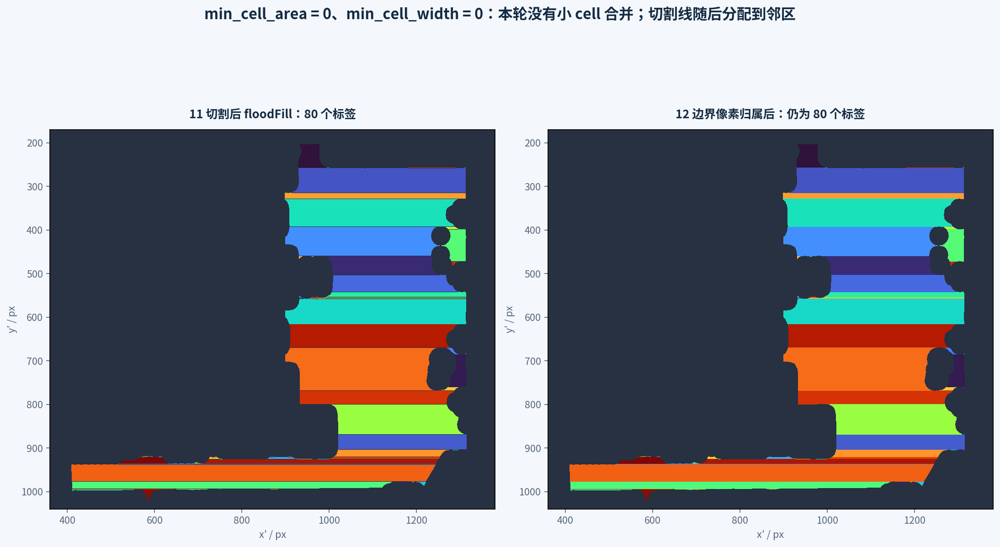
80 块中有 55 块小于 1 m²，最小只有 1 像素 = 0.0025 m²。接近 90° 的旋转、像素台阶、障碍端部和逐行变化检查都会留下细碎区域；面积阈值 0 使它们全部保留。这里的 80 是原生 BCD cell 数，不是 Hybrid 聚合后的任务区数量。
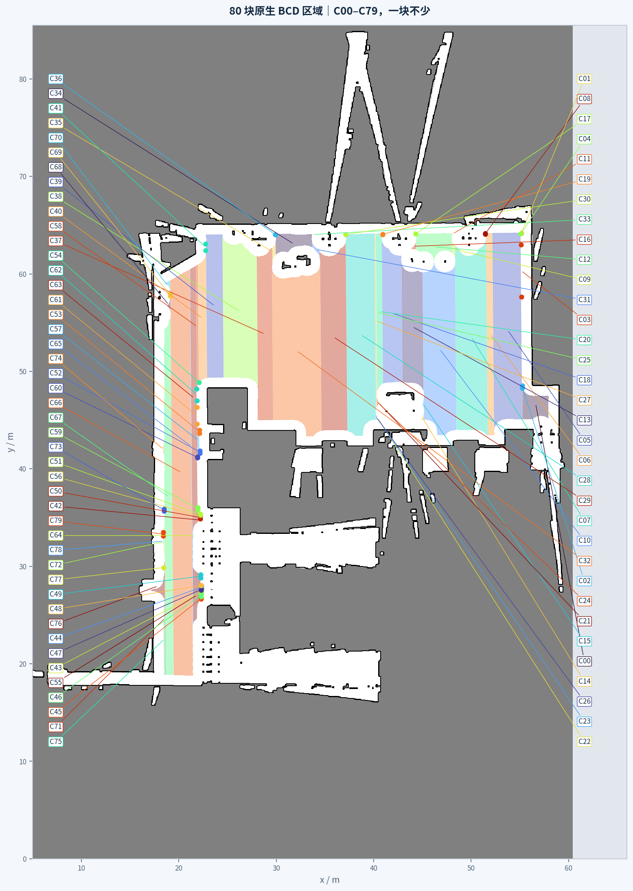
全部 80 块，都可以单独定位、放大和查看扫线
点击区域或使用选择框。灰色线为原生候选，橙色为安全片段，蓝色为归属当前区域的最终路线，紫色为其中 A*；红框高亮当前区域。细小区域不一定能直接点中，可按编号选取。
当前区域四角选择的原生距离（从 cell 中心出发）
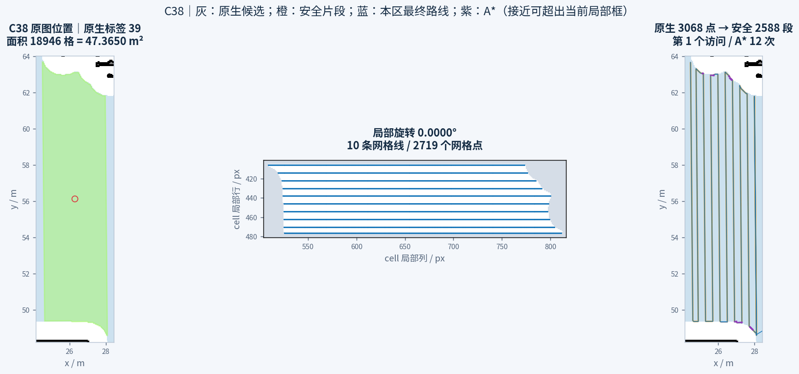
区域总表
面积按原生填充像素计；“访问 #”是最终调度次序。点击一行即可切换上面的地图。下载完整 CSV。
| 区域 | 标签 | 面积 m² | 原生像素 | 网格线 | 原生点 | 安全段 | 访问 # | A* | 状态 |
|---|
每一个 cell 内部，如何变成弓字路径
- 画单 cell 掩膜。轮廓填成白色，周围为黑色；以 cell 包围框中心计算第二次旋转。再旋转的方向仍由 Hough 主方向确定，不是简单比较矩形长宽。
- 确定可扫像素。将整房间旋转到 cell 坐标，与 cell 掩膜共同检查；本轮关闭原生额外半格腐蚀，保留既有 F 安全边界。
- 生成网格线。从可扫最小行开始，行距
floor(0.6 / √2 / r) = 8 px ≈ 0.40 m，半格 4 px；沿行每 1 px 采样。末行若不足完整行距，可落在最大有效行。max_deviation_from_track=0，本次不做上下偏移补线。 - 选择起始角。取首行与末行左右端点共四角，从 cell 中心调用 IPA 原生 A* 比较距离，选择最小者。代价单位是像素路径长度，
1e100表示不可达。 - 排列区内路线。根据角点选择从首行或末行开始，按行左右交替；行间使用 IPA 的区内 A*。源码还包含首行起始连接，可能产生重复经过，报告保留实际输出。
- 输出并变回原图。
path_eps=1.0像素控制采样保留；末端会额外加入，因此可出现重复目标点。先逆 cell 旋转，再逆全局旋转，最后换成米制坐标。
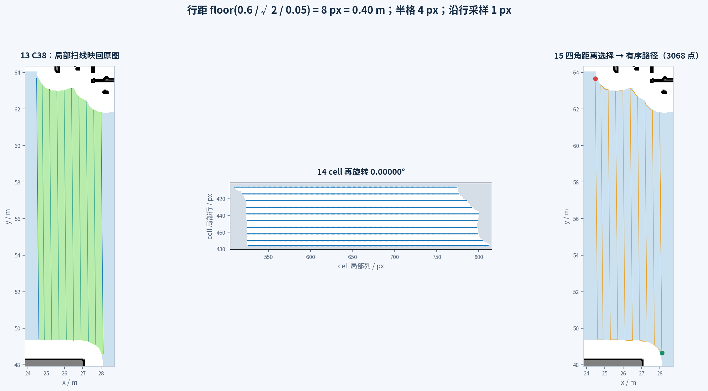
原生输出还不是最终路线：先回到原图裁剪
80 块 cell 共返回 46,243 个原生目标点。适配层先去相邻重复点、合并满足数值判据的共线点，再对每段与原分辨率 F 栅格边界求交，保留自由段。切出的边界端点必要时略向内缩，随后做严格闭格安全检查；没有把障碍像素改成自由。
最终得到 39,465 个可用安全片段，归属 61 个 cell。片段总长度 2263.492542 m；原生各 cell 路径长度之和为 2321.870645 m。两者都还不包含全部跨段与跨区连接，不能当最终整路长度。
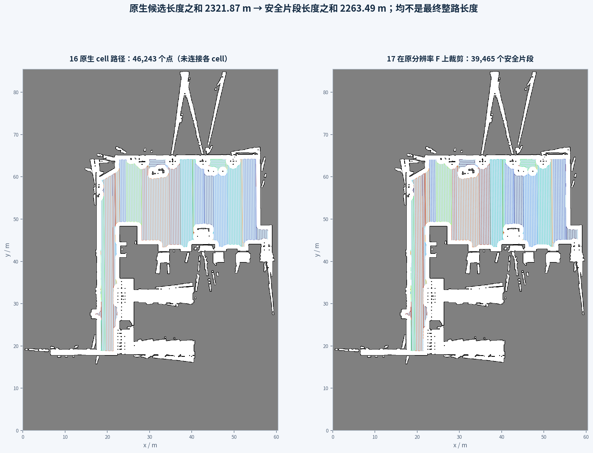
| 未单独调度的原因 | 数量 | 区域 |
|---|---|---|
| 局部重采样后无白格，原生无扫线 | 6 | C04、C17、C30、C36、C54、C77 |
| 原生只给一个目标点，无法构成非零长度片段 | 9 | C01、C19、C25、C42、C45、C46、C48、C59、C60 |
| 原生有很短的路径，原图 F 裁剪后没有可用段 | 4 | C41、C52、C69、C73 |
19 块没有被单独访问，不意味着每块都完全没被扫到：邻区路线和连接段的 0.6 m 作业圆盘仍可能覆盖它们。它们没有从地图自由面积分母中删除。rejected_candidate_segments=0 仅表示裁剪后没有片段在后续严格检查中被拒绝，不表示所有原生线段都完整保留。
从公共起点开始，每轮比较真实接近距离
纯 BCD 把所有有安全片段的 cell 放入待访问列表，不采用 Hybrid 的 BCD/Local 分类。每个 cell 提供两个候选入口：整段序列的首端，以及把整段序列反过来后的首端。每轮先按当前端点到候选入口的直线距离排序，只取最近 8 个候选；再用安全连接器计算实际路径长度，选最短者，相同长度按 cell 索引、正反向确定。
胜出后连接并加入该 cell 的全部片段目标，更新当前位置，然后进入下一轮。本次共 61 轮，首轮是 C38 正向，公共起点接近长度 7.343333 m。这是有候选上限的贪心顺序，不是 IPA TSP，也不保证全局最短。
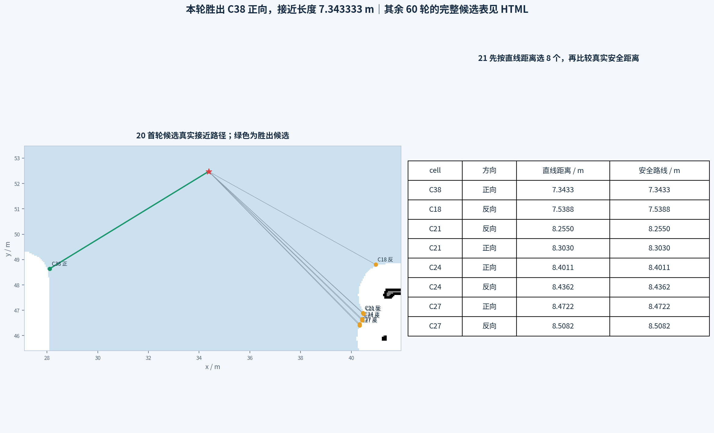
61 轮调度与累计路线
展开全部访问顺序及每区长度
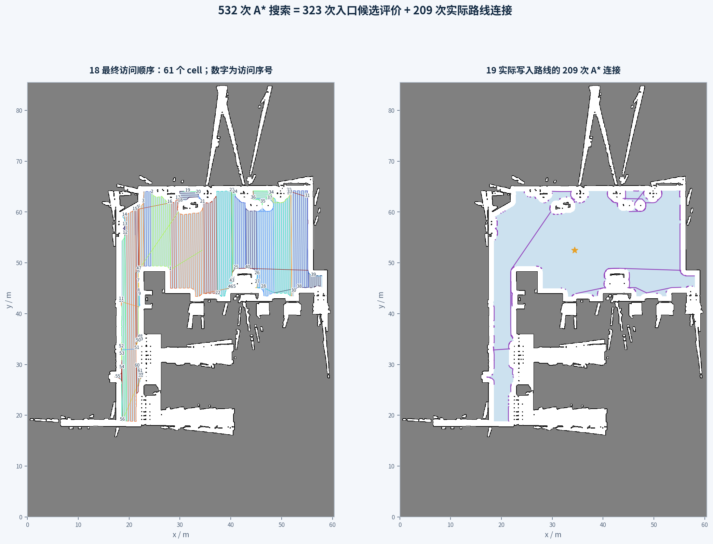
每个目标都必须接上；有视线就直连，否则走 A*
安全片段被展开为起点、终点目标序列，因此本次共有 78,930 条目标连接记录。连接器先检查端点与通行连通性；若可见线段合格则直接连接，否则搜索完整 F 上的八邻域 A*。斜向移动必须同时满足相邻两个正交格自由，禁止切角；所得路径经过共线压缩与经检查的视线简化，再做严格闭格复核。
全程 532 次 A* 搜索中，323 次用于比较入口候选，209 次实际加入最终路线。剩余 78,721 条目标连接记录为可见直连，其中可以包含零长度连接。不能把 532 当成 532 段实际绕行。
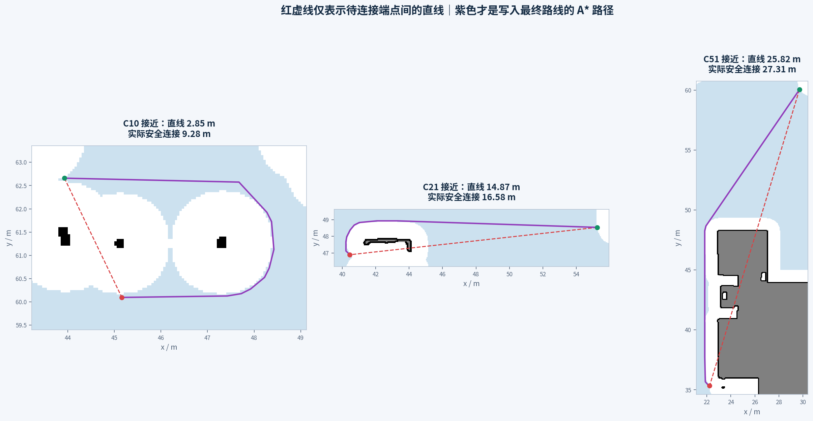
连接使用完整 F，分区边界不阻止通行。任一必需连接失败会使该方案失败，不把不连续片段伪装成成功整路。本次最终路径同时通过严格闭格审计和独立“线段与阻塞像素方框相交”解析审计。
最终路线的任意顶点检查
路线连续安全，但“覆盖了 F”与“覆盖了全图”必须分开
| 项 | 本次证据复算结果 | 含义 |
|---|---|---|
| 完整路线 | 79,225 个顶点 / 2493.437449 m | 含公共起点、所有接近、区内外转移、绕行与重复；不要求回到起点。 |
| 安全片段本体 | 2263.492542 m | 沿已裁剪片段行进的部分。 |
| 每区首次接近之和 | 161.834864 m | 61 次，包括公共起点到第一个区域。 |
| 同区片段之间连接之和 | 68.110043 m | 连接相邻安全片段端点；不是作业宽度的面积统计。 |
| 全自由区覆盖 | 301,205 / 507,209 = 59.384790% | 0.6 m 圆盘沿完整路线扫掠，以原图全部自由像素中心计数。 |
| F 内覆盖 | 278,780 / 278,927 = 99.947298% | F 内还剩 147 格 / 0.3675 m²。 |
| 全图自由残余 | 206,004 格 | 包含净空排除、起点不可达和规划残余；没有从分母扣掉。 |
| 栅格安全 | 碰撞段 0 / 公共净空违规段 0 | 最终静态栅格几何通过，不代表实际执行验证。 |
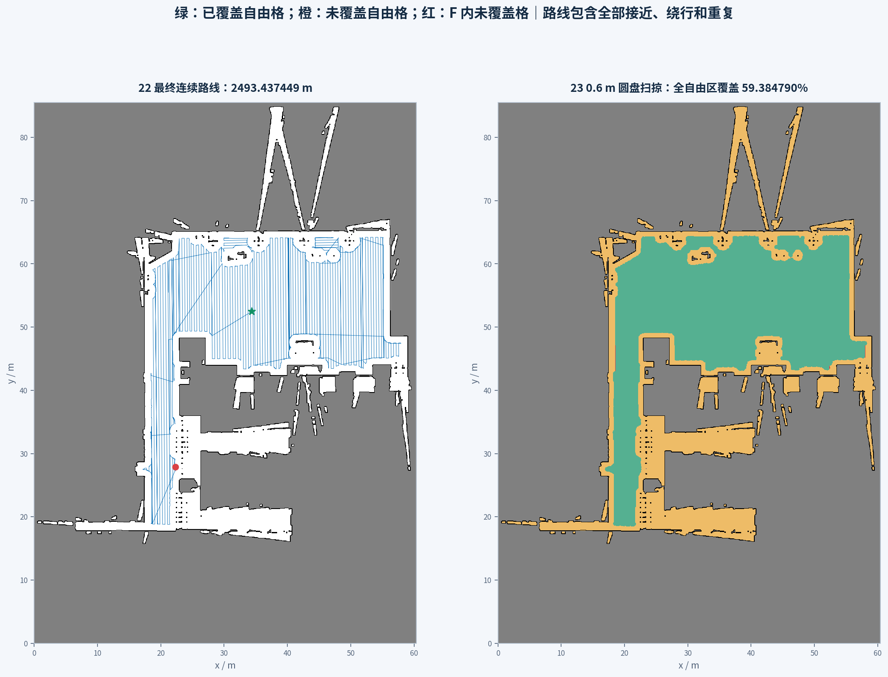
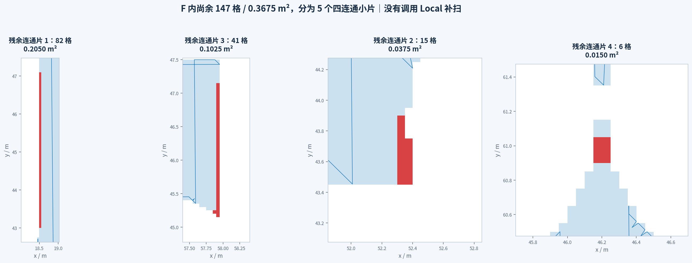
本报告复核的是保存路线和静态几何。没有启动 ROS、Gazebo 或机器人运动，没有验证全程跟踪、曲率、动态避障或真机清扫。原生规划时间为历史记录；本次加记录的追踪耗时不作为算法计时结果。
80 块区域的静态放大索引
下列 10 页索引每页 8 块，确保没有漏掉任何分区。每框单独缩放，面积与访问状态写在标题里。更详细的三联图在“06”按编号选择，或展开下方逐区清单。
索引 01/10 · C00–C07
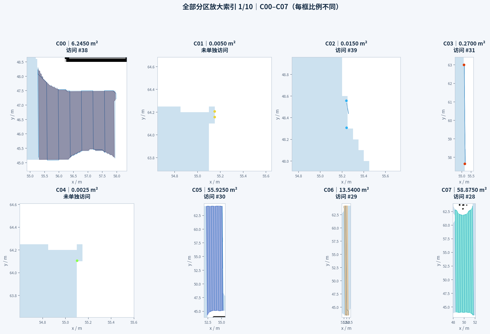
索引 02/10 · C08–C15
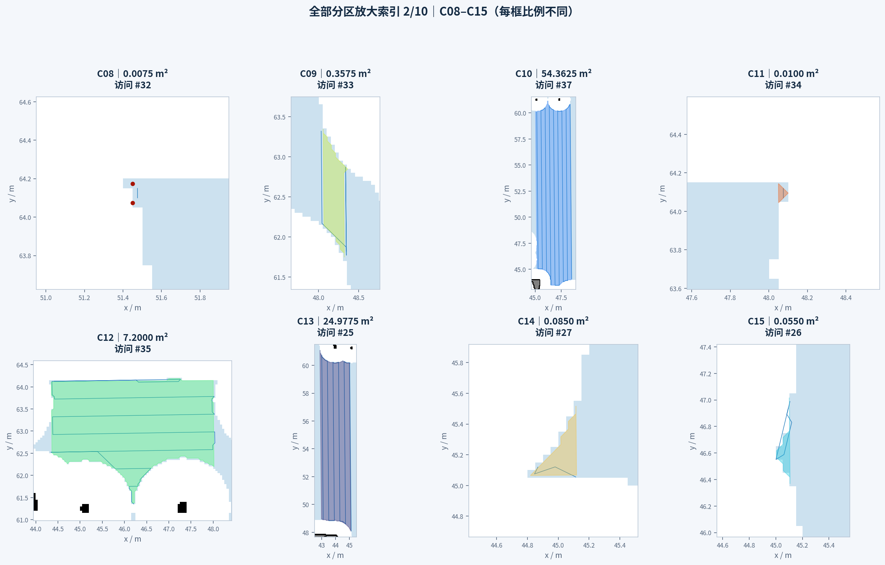
索引 03/10 · C16–C23
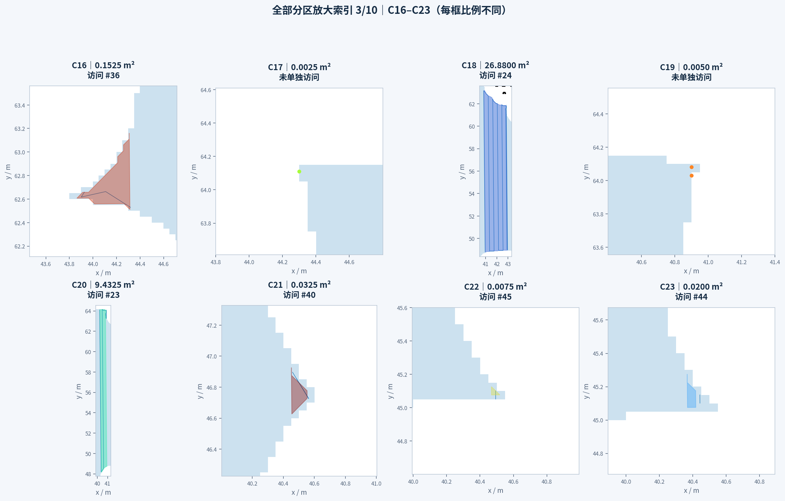
索引 04/10 · C24–C31
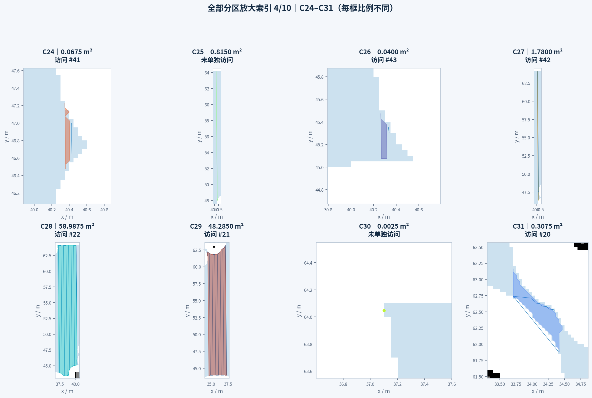
索引 05/10 · C32–C39
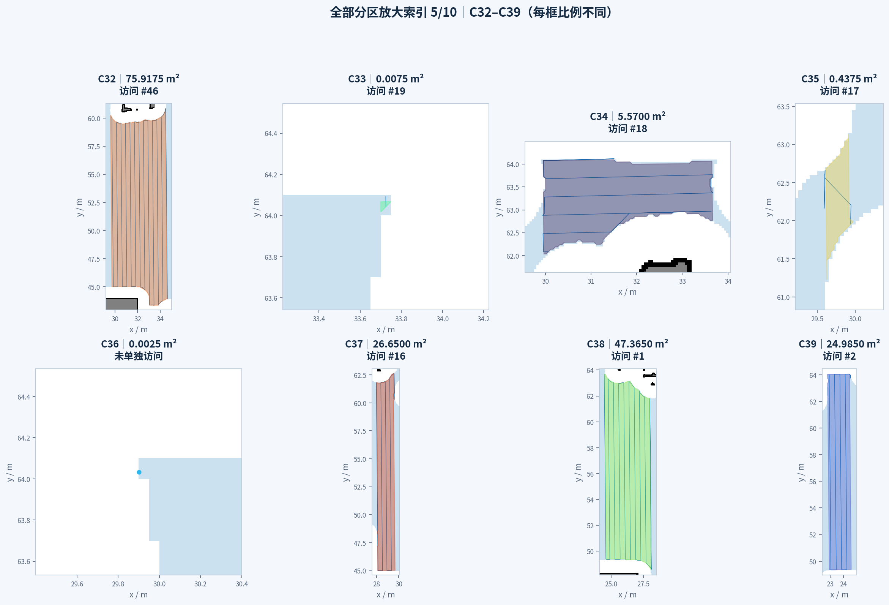
索引 06/10 · C40–C47
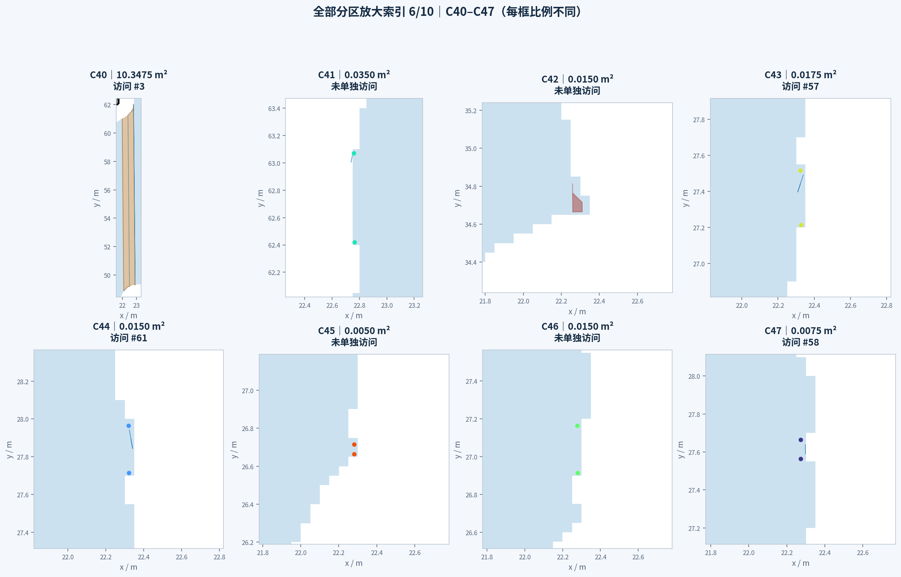
索引 07/10 · C48–C55
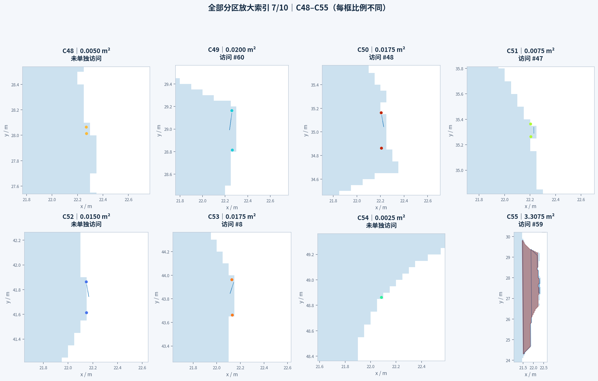
索引 08/10 · C56–C63
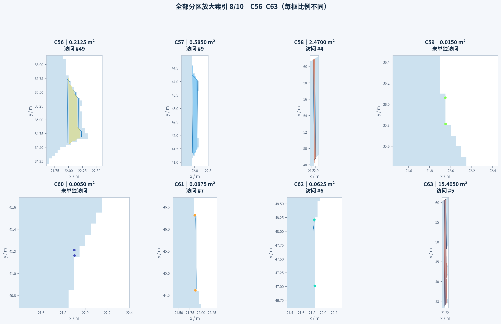
索引 09/10 · C64–C71
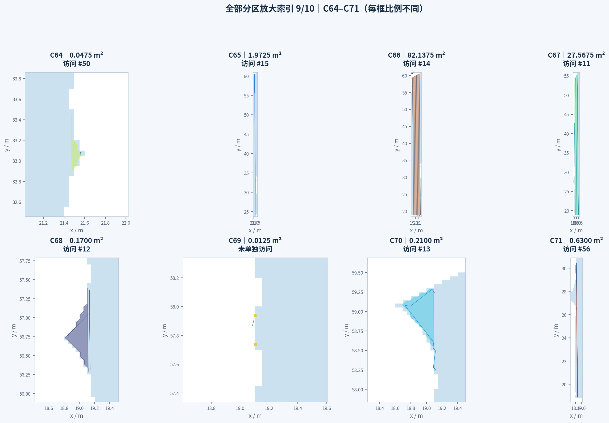
索引 10/10 · C72–C79
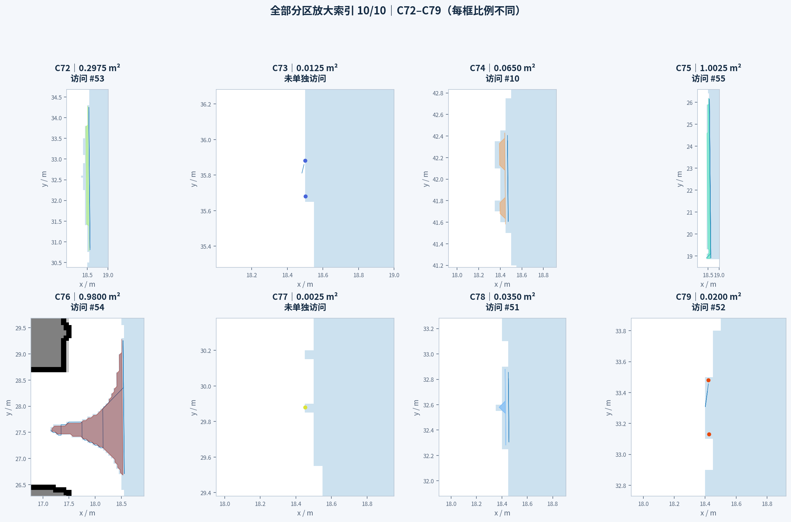
展开全部 80 张三联放大图入口
每张图对应哪个实际源码和证据
本次先核对历史输入、结果、原生证据及当前规划源码的 SHA-256，再从既有生成副本构建只增加记录的追踪程序。追踪程序的 80 个轮廓和全部 46,243 个原生目标点，与历史 output.json 逐值相同，序列化 SHA 也一致。最终路线没有重新规划；本次重新计算指标、重放全部目标和每轮候选选择。
| 阶段 | 源文件及关键入口 |
|---|---|
| 输入筛选、净空与起点 | map_io.py：load_map |
| 全局/局部方向 | room_rotator.cpp：computeRoomMainDirection、computeRoomRotationMatrix、rotateRoom |
| 分解与区内扫线 | boustrophedon_explorator.cpp：233 行旋转分解、263 行扫描切割、490 行标签、567 行合并规则、710 行区内扫线、966 行路径采样 |
| 区域面积与中心 | boustrophedon_explorator.h：GeneralizedPolygon |
| 扫线网格 | grid.h：generateBoustrophedonGrid，259 行起 |
| 实际调用与生成修改 | native/main.cpp：31 行分解、38 行单 cell 扫线；build.py：只改生成副本 |
| 裁剪、调度与路线记账 | planner.py：SafeRoute、candidates、_entry_options、_plan；grid_connector.py：GridConnector |
| 几何与覆盖指标 | metrics.py、ipa_connection.py、ipa_audit.py |
离线打开本目录的 report.html 即可查看图表，无 CDN 或外部网络依赖。正文、图片与交互数据都在报告目录内；源码和历史结果链接还需要原项目的相对目录。重新执行脚本需要本地原 PNG 和既有历史证据路径。
python3 docs/benchmarks/ipa-bcd-aj04-walkthrough-2026-11-02/trace_native.py python3 docs/benchmarks/ipa-bcd-aj04-walkthrough-2026-11-02/prepare_report.py python3 docs/benchmarks/ipa-bcd-aj04-walkthrough-2026-11-02/render_figures.py python3 docs/benchmarks/ipa-bcd-aj04-walkthrough-2026-11-02/assemble_report.py python3 docs/benchmarks/ipa-bcd-aj04-walkthrough-2026-11-02/verify_report.py
报告保留原输入 SHA：88ce806ef09044c2b57ba86e7dc3befab7a177b8a07690899900fc4ffca2b016。显示坐标保留原始浮点值；静态图片为渲染展示，精确几何以 JSON 与掩膜为准。区域颜色只用于识别，不表示语义房间或规划优劣。